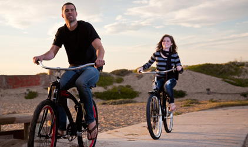

Trail Reviews
All Trails > Ojai
Ojai Trails
Northridge Loop
Go to map of trail
posted on January 14th, 2023
TRAIL INFO
| Distance | 10.5 miles |
|---|---|
| Elevation gain | 1,200 ft |
| Difficulty | Intermediate |
| Surface | Dirt, gravel, rocks |


If you are looking for great scenery and a great workout without all the technical difficulty of other trails, Northridge Loop is for you. The ridge runs east to west, with Ojai Valley on one side and Rose Valley on the other. The trail features amazing views of both valleys plus the Los Padres National Forest.
There are a total of 6 trail heads spread out over the 14.5 mile loop, so there are plenty of places to get on or off the trail. Hiking is permitted along all trails , so ride with caution and don't override your stopping power.
Skill level
While the overall trail is fine for beginners, two spurs, Gridley and Pratt, are much narrower and technical, so be sure to check the signage before choosing a trail.
While there are no steep drops or bombs on this trail, there are several areas of the trail that extend over bare rock. The paths are marked, but there are canyon areas that you should be aware of. Before starting any downhill section make sure you know the path!
TRAIL MAP AND ELEVATION


Surface
Most of the lower trails are firebreak roads or other, wide access roads. As you climb, trails become single track and a bit more technical. There are patches of bare rock and loose rock is common on most downhill sections. If you choose to ascend via the Killabase Road trail head, the first quarter mile is paved path.
Notable features
While there aren't any huge jumps or insanely technical sections of the trail, there are some areas that are worth taking the time to explore. Our favorite is known as "Jacob's Ladder," a 25 foot section of rail road ties, iron rebar, and carpet (yes carpet) strips just off the Casidas Park firebreak. Climbing this makeshift purchase point is a joy, and presents a decent challenge to all but the serious competitive climber. Recently I've heard that some of the more adventurous bikers have been descending it as a series of jumps. If you want to give this a try you need to be extra careful, the washout resumes at the bottom of it and is perched on the edge of a 700 foot drop. So consider yourself warned!
Although it's off the beaten path a bit, I strongly recommend taking the time to access the "Cow Chute" spur off the main loop. This is a single track spur that descends nearly 2000 feet off the main ridge with high, banked switchbacks. The path is mostly clear of loose rocks and obstacles, making it the most fun descent on the trail. The downside? It's a spur only, once you've run it you'll have to climb back up.
Final thoughts
It's not the biggest, it's not the highest, and it's not the most technical trail in Ojai, but in my opinion, it's the best. It has an amazing variety of surfaces and trail types, so much so that you really can say there is something for everyone on the Northridge. Check it out, and you'll be taking your friends back up the trail over and over again.
I also want to mention that on June 22nd of every year, the Ojai Biking Club sponsors a trail cleanup day. If you want to help out, or just join a good group of folks who love this trail, come by!
About the author:
Daniel Weston lives in Oxnard, California with his wife, young daughter, and various house plants. He writes about mountain biking, web design, and the outdoors. Contact him at danw@cycletracks.org or check out his blog: www.danbikesalot.com
Comments
To leave a comment you must register or log in.
MAX SMITH wrote this August 7th, 2024 at 12:52
Great review! I had a blast on the West side of the loop last week. I found a hidden gem in the old orchard field past the "Lazy S" spur. If you keep going past the trail marker, you'll find a fantastic run through a dried up gulley-wash. Just stay clear of it on rainy days.
Ojai Trail Facts
Ojai has over 200 miles of hiking and biking trails, with over 80 miles dedicated solely to mountain biking! Most trails border working farms or ranches, so please take the time to learn your route before going, and pay careful attention to trail markers. Ojai trails are mostly self maintained, so if you see a problem, try to fix it! If the problem is a large one, contact one of the local cycling clubs to let them know,each month they have a trail-repair day that is spent maintaining the trails you know and love!
Rider Reviews
Los Robles Trail
by Danny Keys
submitted on 06/26/24
My buddies and I had heard about this trail in November from a friend who had finished the West portion earlier in the month. It sounded like a good trail, but we didn't have time to check it out until last week.
All I can say is wow! I really hate that I waited so long to try this trail, especially since it's right in my backyard (I live in Ventura). My friends and I got to the first trail head around 9:30 am that morning. The first portion of the trail were firebreaks and service roads, and for a while it seemed that we were just going to be going on another scenic ride.
About two-thirds of the way up, we came to the first set of single-tracks breaking away from the firebreak. From then on the trail did not let up!
Heavy on switchbacks (both on the climb and on the descent), and with good climbs, the trail alone is worth the trip! However, towards the top, we encountered a pretty strong technical section. Bare rock, small washouts, and loose rocks made for some slow going in areas.
On the descent, the more technical nature of the trail keeps you from bombing out a run. A friend of mine that doesn't wish to be named (we'll call him Marty) is just starting out and we may have pushed him a bit too much! After the exhausting climb he didn't have much left for the downhill. He took two tumbles on the way down but thankfully wasn't hurt bad.
Hitting the firebreaks again on the way down isn't a bad thing either. You can pick your speed up a bit here, and there are a few shallow hills that allow you to get some really good air.
For this trip we just did the West trail. I'm really looking forward to going back in a few weeks to do the East trail as well!
Copper Canyon Loop
by Shea Hansen
submitted on 06/26/24
I'm going to be the first to admit, I don't like technical climbs, and I don't consider myself a good climber. That's why, when my friend Heather asked me to go with her to the Copper Canyon Loop, or the "Coop" as it's called, I hesitated. I've heard horror stories about the boulder climbs, poorly marked trails, and lack of trail upkeep.
Regardless, she persisted and last week we made the 3 hour trek from Goleta to the canyon. All I can say is, thank goodness I went!
If you ask me, the trail upkeep issue is over-rated. Over 80% of the trail is considered natural state, meaning there isn't supposed to be upkeep past directional markings. I will admit that the trail markers can use some improvement. More than once Heather and I started to question if we were on the right trail until finally seeing a marker just before we turned around. If you're not used to navigating through canyons, I'd bring a GPS device, more water than you think you're going to need, and a healthy dose of patience.
Other than the markings, the trail is a joy. Yes, there are some very technical climb sections, but they are few and far between and they simply provide the challenge for those that wish to take it on. I did not, and felt no shame at all in dismounting and carrying my bike up the more difficult sections.
For me, the payoff was the ridgeline run that goes from the top of the canyon wall all the way down to the Copper River, 850 feet below. The descent is almost unbroken by switchbacks, and has an amazing amount of visibility. If you have the nerve, you can build a lot of speed before getting to the mogul jump section at the bottom. It's not for the faint of heart however, as there are no rails, and no bushes to catch you should you slip off the edge.
The loop back is really fun as well, with an alternating series of climbs and descents that keep things interesting. Thankfully, the technical climbing section isn't part of the loop descent, and you take a gradual, wide path back to the trail head. That was perfect for me, as I was pretty worn out by the time we started down.
If you're like me and are a little nervous about tackling the "Coop," don't be! There is a lot of fun to be had there, regardless of skill level or terrain preference.
Need a rental?

Melanie's Biks has you covered
If you're visiting Southern California and need a bike, give us a call! Free drop off and pick up.
"Northridge Loop is easily the best loop in Ojai! You'll kick yourself if you miss it!"
Nick Brazzi - The Complete Guide to Ojai Trails